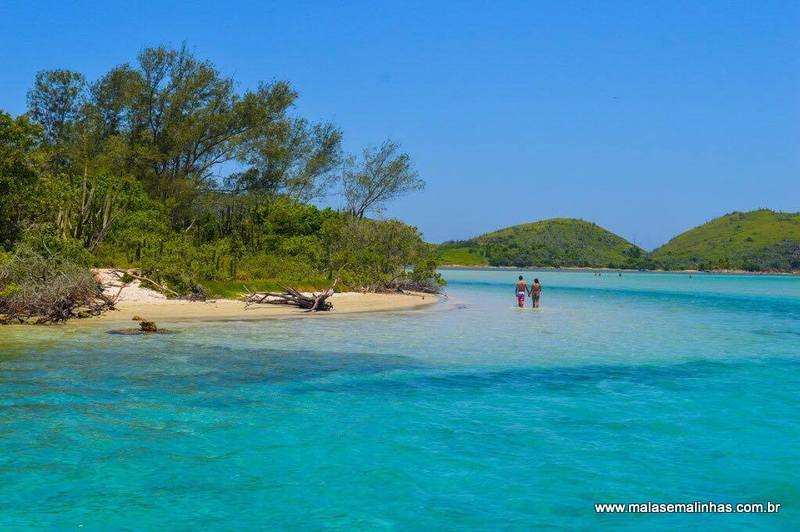

Copacabana
Copacabana fica localizada na Zona Sul do Rio Janeiro, é bem famosa por conta da sua bela praia e por conta dos diversos artistas q moram na região.
Itacoatiara
Itacoatiara fica localizada na região ocêanica de NIterói e é famosa por conta da sua bela vista e os campeonatos de surf que acontecem na região
Cabo Frio
Cabo Frio fica localizada na região dos lagos, no Rio de Janeiro e seu principal atrativo turistico são as belas praias da região